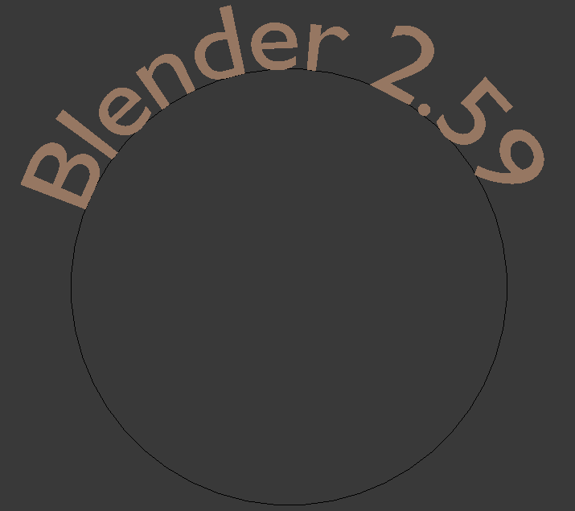

Properties¶
Shape¶
- Resolution
- Preview
- The surface resolution in the U direction to use in the viewport.
- Render
- he surface resolution in the U direction, set to zero to use the the Preview resolution.
- Fill
Determines the way a Curve is displayed when it is beveled.
- Fill Deformed
- Fills the curve after applying all modification that might deform the curve (i.e. shape keys and modifiers).
- Fast Editing
- Does not fill polygons while editing text.
Texture Space¶
TODO.
Geometry¶
- Modification
- Offset
- Alters the space between letters.
- Extrude
- Will extrude the text along both the positive and negative local Z axes.
- Bevel
- Depth
- Changes the size of the bevel.
- Resolution
- Alters the smoothness of the bevel.
- Taper Object
- Used to select a curve object that can be used to cause the characters to get thinner towards one end. You can also alter the proportions of the Taper throughout the tapered object by moving/scaling/rotating the Control Points of the Taper Object. The Taper Object can only be a curve. Editing the Handles and Control Points of the Taper Object will cause the original object to change shape.
- Bevel Object
- Used to select a curve object that can be used to give custom bevel results.
Font¶
Reference
The Font panel has several options for changing the look of characters.
Loading and Changing Fonts¶
Loading a Type 1 font file.
Blender comes with a built-in font by default and is displayed in each of the four font style data-block menus . The built-in font is always present and shows in this list as “Bfont”. The data-block menu contains a list displaying the currently loaded fonts. Select one for each font style.
To load a different Font, click one of the Load buttons in the Font panel and navigate to a valid font. The File Browser will give all valid fonts a capital F icon, as seen in Loading a Type 1 font file.
注解
Location of fonts on Unix
Fonts are typically located under /usr/lib/fonts, or some variant like /usr/lib/X11/fonts,
but not always. They may be in other locations as well,
such as /usr/share/local or /usr/local/share, and possibly related sub-trees.
If you select a font that Blender cannot understand,
you will get the error Not a valid font.
Remember the same font will be applied to all chars with same style in a text, but that a separate font is required for each style. For example, you will need to load an Italics font in order to make characters or words italic. Once the font is loaded you can apply that font “Style” to the selected characters or the whole object. In all, you would need to load a minimum of four different types of fonts to represent each style (Normal, Italics, Bold, Bold-Italics).
It is important to understand, that Blender does not care what font you load for “normal”, “bold”, etc., styles. This is how you can have up to four different fonts in use in the same text, but you have to choose between different styles of a same font, or different fonts. Blender has a number of typographic controls for changing the style and layout of text, found in the Font panel.
Size and Shear¶
- Size
- Controls the size of the whole text (no way to control each char size independently). Note however, that chars with different fonts (different styles, see below) might have different visible sizes.
- Shear
Controls the inclination of the whole text. Different to as it may seems, this is not similar to italics style.
{kind=link}
Objects as Fonts¶
You can also “create” your own “font” inside Blender! This is quite a complex process, so let us detail it:
- First, you must create your chars. Each char, of any type, is an object (mesh, curve, meta...). They all must have a name following the schema: common prefix followed by the char name (e.g. “ft.a”, “ft.b”, etc.).
- Then, for the Text object, you must enable the Dupli Verts button ( panel).
- In the Font tap, fill the Object Font field with the common prefix of your “font” objects.
Now, each time a char in your text matches the suffix part of a “font” object’s name, this object is duplicated on this char. The original chars remain visible. The objects are duplicated so that their center is positioned at the lower right corner of the corresponding characters.
- Text on Curve
Used to select a curve for the text object to follow.
Text on curve.
小技巧
You can also use the Curve Modifier which offers more control.
- Underline
Toggled with the Underline button before typing. Text can also be set to Underlined by selecting it then using the Underline button in the Tool Shelf.
- Position
- This allows you to shift vertically the position of the underline.
- Thickness
- This controls the thickness of the underline.
{kind=link}
Character¶

Bold text. |
{kind=link}
- Bold
- Toggled with the Bold button before typing. Text can also be set to Bold by selecting it then using the Bold button in the Tool Shelf.
- Italics
- Toggled with the Italic button before typing. Text can also be set to Italic by selecting it then using the Italic button in the Tool Shelf.
- Underline
- Enables underlining, as controlled by the Underline settings above.
- Small Caps
- Type small capital text.
Blender’s Bold and Italic buttons do not work the same way as other applications, as they also serve as placeholders for you to load up other fonts manually, which get applied when you define the corresponding style; see Font.
To apply the Bold/Italics/Underline attribute to a set of characters, you either turn on Bold / Italics / Underline prior to typing characters, or highlight (select) first and then toggle Bold/Italics/Underline.
Setting Case¶
You can change the text case by selecting it then clicking the To Upper or To Lower in the tool shelf.
Enable the Small Caps option to type characters as small caps.
The size of the Small Caps can be changed with the Small Caps Scale setting. Note that the Small Caps Scale is applied the same to all Small Caps formatted characters.
Paragraph¶
The Paragraph Panel has settings for the alignment and spacing of text.
{kind=link}
The paragraph tab.
Horizontal Alignment¶
- Left
- Aligns text to left of frames when using them, else uses the center point of the Text object as the starting point of the text (which grows to the right).
- Center
- Centers text in the frames when using them, else uses the center point of the Text object as the mid-point of the text (which grows equally to the left and right).
- Right
- Aligns text to right of frames when using them, else uses the center point of the Text object as the ending point of the text (which grows to the left).
- Justify
- Only flushes a line when it is terminated by a wordwrap (not by
Return), it uses whitespace instead of character spacing (kerning) to fill lines. - Flush
- Always flushes the line, even when it is still being entered; it uses character spacing (kerning) to fill lines.
Both Justify and Flush only work within frames.
Vertical Alignment¶
- Top Base-Line
- Aligns the text base-line to top of frames when using them, else uses the center point of the Text object as the starting point of the text (which grows to the bottom).
- Top
- Aligns top of text to the center point of the Text object (which grows to the bottom). It behaves as Top Base-Line when using frames. Top only works without frames.
- Center
- Centers text in the frames when using them, else uses the center point of the Text object as the mid-point of the text (which grows equally to the top and bottom).
- Bottom
- Aligns text to bottom of frames when using them, else uses the center point of the Text object as the ending point of the text (which grows to the top).
Spacing¶
- Character
- A factor by which space between each character is scaled in width
- Word
- A factor by which whitespace between words is scaled in width.
You can also control it by pressing
Alt-LeftorAlt-Rightto decrease/increase spacing by steps of 0.1 . - Line
- A factor by which the vertical space between lines is scaled.
Offset¶
- X offset and Y offset
- Well, these settings control the X and Y offset of the text, regarding its “normal” positioning. Note that with frames (see Text Boxes), it applies to all frames’ content...